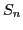

In a recent series of articles, the author presented a multiple-coarsening multigrid method for solving  discretizations of the Boltzmann transport equation. This algorithm is applied to an integral equation for the scalar flux or moments. Although this algorithm is very efficient over parameter regimes that describe realistic neutron/photon transport applications, improved methods that can reduce the computational cost are presented in this talk. These improved methods are derived through a careful examination of the frequencies, particularly the near-nullspace, of the integral equation. In the earlier articles, the near-nullspace components were shown to be smooth in angle in the sense that the angular fluxes generated by these components are smooth in angle. In this talk, we present a spatial description of these near-nullspace components. Using the angular description of the earlier papers together with the spatial description reveals the intrinsic space-angle dependence of the integral equation's frequencies. This space-angle dependence then is used to determine the appropriate space-angle grids to represent and efficiently attenuate the near-nullspace error components on. It will be shown that these components can have multiple spatial scales. By using only the appropriate space-angle grids that can represent these spatial scales in the original multiple-coarsening algorithm, an improved algorithm is obtained. Moreover, particularly for anisotropic scattering, recognizing the strong angle dependence of the angular fluxes generated by the high frequencies of the integral equation, an improved multiple-coarsening scheme is derived. Restricting this scheme to the appropriate space-angle grids produces a very efficient method.